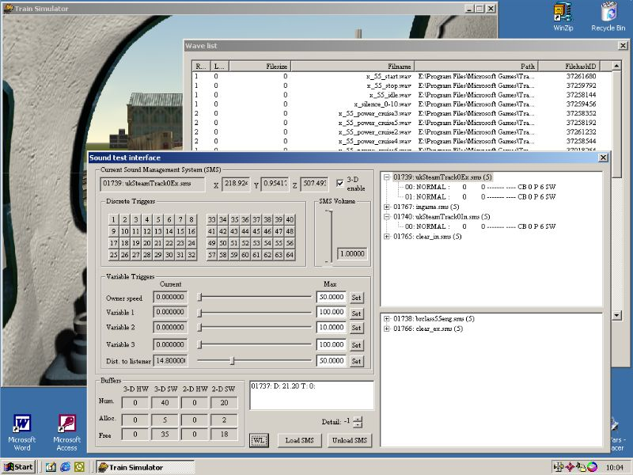

The Sound Test Interface
What it is and how to use it
by Stuart Williamson and Jeff Ashton
Overview
This interface doesn't allow you to create sounds, but provides feedback on how sounds are being played and, to some degree, allows you to manipulate them.
We've been able to disable certain sounds from playing. This will be really useful when testing new rolling stock sounds as both the loco and track sounds can be turned off/on at will, enabling just the sounds you want to hear to be heard.
It also gives some data about the sound card setup, which we can see relates to some of the numbers in the soundcfg.dat file. It appears that MSTS defaults to 40 3D streams and 20 2D streams regardless of the actual sound card hardware! But this can be altered.
